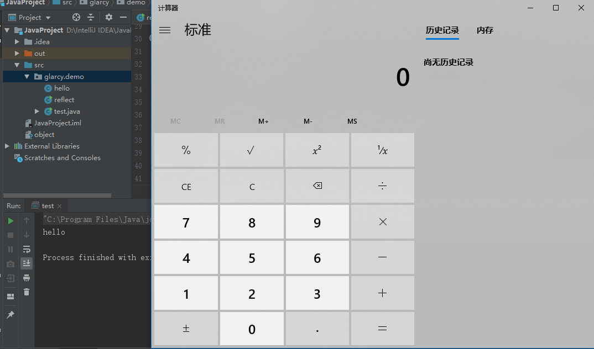

Reflection in PHP
通过反射可以调用执行类中的私有方法。PHP自5.0版本以后添加了反射机制，它提供了一套强大的反射API，允许你在PHP运行环境中，访问和使用类、方法、属性、参数和注释等，其功能十分强大，经常用于高扩展的PHP框架，自动加载插件，自动生成文档，甚至可以用来扩展PHP语言。
demo
1 |
|
输出：
1 | Hello Glarcy |
例子
国赛的RefSpace
flag.php
1 | use interesting\FlagSDK; |
sdk.php
1 | public function verify($key) |
这里就可以利用反射来获得getHash()的返回值
1 | use interesting\FlagSDK; |
Reflection in Java
Java反射就是在运行状态中，对于任意一个类，都能够知道这个类的所有属性和方法；对于任意一个对象，都能够调用它的任意方法和属性；并且能改变它的属性。
demo
hello.java
1 | package glarcy.demo; |
reflect.java
1 | package glarcy.demo; |
输出
1 | 获取所有公有方法 |
例子
利用java反射进行命令执行
1 | package glarcy.demo; |

Apache-Commons-Collections反序列化漏洞：http://pupiles.com/java_unserialize2.html
Code Breaking 上面一道相关的题目 javacon：http://rui0.cn/archives/1015
参考链接：